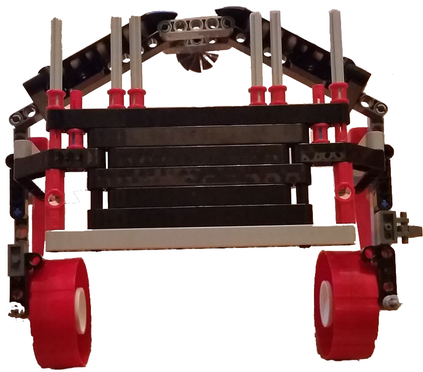
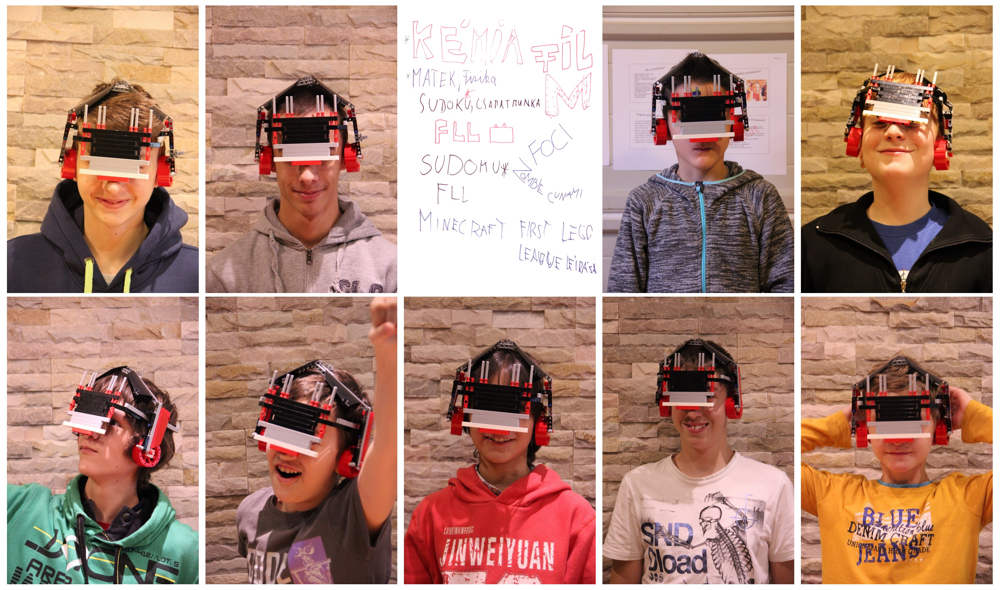

Tanulás a Jövőben - Tanuló fejhallgató
TövisCsapat - Kutatási projekt - World Class 2014-15

Ne problémát keressünk, hanem olyan dolgokat, amin javítani lehet.
PROBLÉMA
- Minden gyors, rohanni kell, állandó időhiány van.
- Néha minden dühítően lassú és unalmas – valahogy fel kellene dobni
- Ki kellene bújni az idő és a korlátok alól, akár trükkökkel is.
- Talán épp egy játékos, dicsérő, érdekes és vicces időt vagy sebességet manipuláló szerkezet kellene…
MEGOLDÁSI JAVASLATUNK
- A földön mindenki használhatja, akkora, mint egy elektron, de fel tudod nagyítani. Nagyítva fejhallgatónak néz ki.
- Ez a tárgy emberétől és Hangulatától váltja a színét.
- Mindig működik soha nincs vége.
- A gépünk az idő gyorsítására és lassítására és a múltba azaz a jövőbe látásra való.
- Avagy beleszáll a tudás a fejünkbe, és azzá változik amivé akarjuk.
- Egy ilyen tárgyat egyszerre egy ember tud használni folyamatosan és akárhol.
- Két legfőbb összetevője: nagyon könnyű fém és elektromosság
MEGOSZTÁS
- Megkérdeztünk tanárokat, edzőket, és családtagokat.
- A nagy többség azt mondta , hogy a felsorolt dolgok szerintük is problémák.
- A kérdezettek 99%-a szerint az időkérdés megoldódik a közeljövőben.
- Sok megoldási javaslatot kaptunk pl.: izgisebb órák, több kísérlet stb.
- Sok ember szerint a mi megoldásunk jó.
- Rengeteg ember szerint viszont van még funkció amit beletehetnénk.
